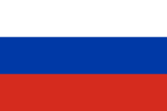
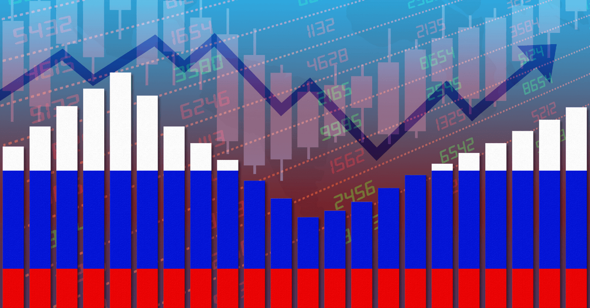
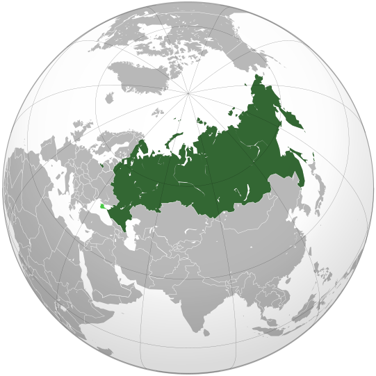

Rusia (în rusă Росси́я, transliterat: Rossia; pronunție rusă: /rɐˈsʲijə/), oficial Federația Rusă (în rusă Росси́йская Федера́ция, transliterat: Rossiiskaia Federația, pronunțat /rɐˈsʲijskəjə fʲɪdʲɪˈratsɨjə/), este o țară în Eurasia. Cu 17.125.200 km², Rusia este cea mai întinsă țară din lume, acoperind peste o optime din suprafața locuită a Pământului, și a noua ca populație, cu peste 144 de milioane de oameni în decembrie 2017, excluzând Crimeea. Aproximativ 77% din populație trăiește în partea vestică, europeană, a țării. Capitala Rusiei, Moscova, este unul dintre cele mai mari orașe din lume; alte mari orașe sunt Sankt Petersburg, Novosibirsk, Ekaterinburg și Nijni Novgorod.
Extinsă pe aproape toată Asia de Nord şi pe o mare parte din Europa de Est, Rusia se întinde pe unsprezece fuse orare şi cuprinde o gamă largă de tipuri de mediu şi forme de relief. De la nord-vest spre sud-est, Rusia are frontiere terestre cu Norvegia, Finlanda, Estonia, Letonia, Lituania şi Polonia (ambele cu Regiunea Kaliningrad), Belarus, Ucraina, Georgia, Azerbaidjan, Kazahstan, China, Mongolia şi Coreea de Nord. Are frontiere maritime cu Japonia în Marea Ohotsk şi cu SUA (statul Alaska) în Strâmtoarea Bering.
Slavii răsăriteni au apărut ca grup identificabil în Europa între secolele al III-lea şi al VIII-lea e.n. Întemeiat şi guvernat de o elită războinică varegă şi de urmaşii ei, statul medieval Rutenia a apărut în secolul al IX-lea. În 988, el a adoptat creştinismul ortodox de la Imperiul Bizantin,[8] începând o sinteză a culturilor bizantină şi slavă care a definit cultura rusă în următorul mileniu. Rutenia s-a dezintegrat în cele din urmă în mai multe state mici; majoritatea teritoriilor sale au fost apoi invadate de mongoli şi au devenit tributare Hoardei de Aur nomade în secolul al XIII-lea. Marele Cnezat al Moscovei a reunificat treptat principatele ruseşti din jur şi a obţinut independenţa faţă de Hoarda de Aur. Până în secolul al XVIII-lea, această ţară îşi întinsese mult graniţele prin cuceriri, anexări şi explorări, transformându-se în Imperiul Rus, al treilea imperiu ca întindere din istorie, din Polonia în vest până în Alaska în est.

Drapelul Rusiei
Stema Rusiei
După Revoluția Rusă, Republica Sovietică Federativă Socialistă Rusă a devenit principala și cea mai mare republică constituantă a Uniunii Republicilor Sovietice Socialiste, primul stat socialist prin constituție din lume. Deși inițial aliată cu Germania Nazistă, Uniunea Sovietică a jucat un rol decisiv în victoria Aliaților în al Doilea Război Mondial, din care a ieșit ca superputere mondială rivală cu Statele Unite în Războiul Rece. Epoca sovietică a adus unele dintre cele mai importante realizări tehnologice ale secolului al XX-lea, între care primul satelit artificial și lansarea primilor oameni în spațiu. Până la sfârșitul lui 1990, Uniunea Sovietică avea a doua economie a lumii, cea mai mare armată permanentă din lume și cel mai mare stoc de arme de distrugere în masă. După dizolvarea Uniunii Sovietice în 1991, au apărut douăsprezece republici independente: Rusia, Ucraina, Belarus, Kazahstan, Uzbekistan, Armenia, Azerbaidjan, Georgia, Kîrgîzstan, Moldova, Tadjikistan, Turkmenistan, iar Statele Baltice anexate forțat și-au redobândit independența: Estonia, Letonia, Lituania; RSFS Rusă s-a reconstituit sub forma Federației Ruse și este recunoscută în dreptul internațional ca continuatoare a personalității legale și succesoare a Uniunii Sovietice. Este guvernată ca republică federală semiprezidențială.
Economia rusă este a douăsprezecea ca mărime după PIB nominal și a șasea după paritatea puterii de cumpărare în 2015. Bogatele resurse minerale și energetice ale Rusiei sunt cele mai mari din lume, țara fiind unul dintre principalii producători de țiței și gaze naturale din lume. Este una dintre cele cinci țări recunoscute ca deținătoare de arme nucleare și posedă cel mai mare arsenal de distrugere în masă. Rusia se revendică mare putere și ca putere regională având ambiții de potențială superputere. Este membru permanent al Consiliului de Securitate al Națiunilor Unite și partener activ al ASEAN, precum și membru al Organizației pentru Cooperare de la Shanghai, al G20, al Consiliului Europei, al Cooperării Economice Asia-Pacific (APEC), al Organizației pentru Securitate și Cooperare în Europa (OSCE), și al Organizației Mondiale a Comerțului (WTO), precum și membrul conducător al Comunității Statelor Independente (CSI), al Organizației Tratatului de Securitate Colectivă (CSTO) și unul din cei cinci membri ai Uniunii Economice Eurasiatice, împreună cu Armenia, Belarus, Kazahstan și Kîrgîzstan.
| Cuprins | ||
|---|---|---|
|  | |
 |
Cele 160 de grupuri etnice din Rusia vorbesc 100 de limbi.Conform Recensământului din 2002, 142,6 de milioane de oameni vorbesc limba rusă, urmată de tătară cu 5,3 milioane de vorbitori și de ucraineană, cu 1,8 milioane. Limba rusă este singura limbă oficială de stat, dar Constituția acordă republicilor individuale dreptul de a stabili propriile lor limbi de stat în plus față de limba rusă.
În ciuda distribuției sale largi, limba rusă este omogenă în țară. Rusa este limba cea mai răspândită geografic din Eurasia, precum și cea mai vorbită limbă slavă. Acesta aparține familiei limbilor indo-europene și este una dintre membrele grupului limbilor slave răsăritene, celelalte fiind belarusa și ucraineana (cu variația ei, ruteana). Exemple scrise ale slavei vechi răsăritene (rusa veche) sunt atestate începând cu secolul al X-lea.
Limba rusă este a doua cea mai utilizată limbă pe Internet, după engleză, una dintre cele două limbi oficiale de la bordul Stației Spațiale Internaționale și este una dintre cele șase limbi oficiale ale .
35 de limbi sunt recunoscute oficial în Rusia, în diferite regiuni de către guvernele locale.
| Limba | Familia de limbi | Subiecte federale |
|---|---|---|
| Abaza | Nord-Vest-caucazină | Karaciai-Cerchezia |
| Adîghee | Nord-vest-caucaziană | Adygea |
| Altai | Turcică | Republica Altai |
| Bașkiră | Turcică | Bașchiria |
| Buriată | Mongolică | Buriatia |
| Cecenă | Nord-est-caucaziană | Republica Cecenă Icikeria |
| Cercheză | Nord-vest-caucaziană | Karaciai-Cerchezia |
| Ciuvașă | Turcică | Ciuvașia |
| Tătară crimeeană | Turcică | Republica Crimeea |
| Erzia | Uralică | Mordovia |
| Ingușă | Nord-est-caucaziană | Ingușeția |
| Kabardiană | Nord-vest-caucaziană | Kabardino-Balkaria |
| Lakmîkă | Mongolică | Kalmîkia |
| Karaceai-balkară | Turcică | Kabardnio-Balkaria |
| Hakas | Turcică | Hacasia |
| Komi | Uralică | Republica Komi |
| Oseta | Indo-europeană | Osetia de Nord |
| Mokșa | Uralică | Mordovia |
| Nogai | Turcică | Karaciai-Cerchezia |
| Mari de sus | Uralică | Mari El |
| Tătara | Turcică | Tatarstan |
| Tuvană | Turcică | Tuva |
| Udmurtă | Uralic | Udmurtia |
| Ucraineana | Indo-europeană | Republica Crimeea |
| Iakuta | Turcică | Iacuția |